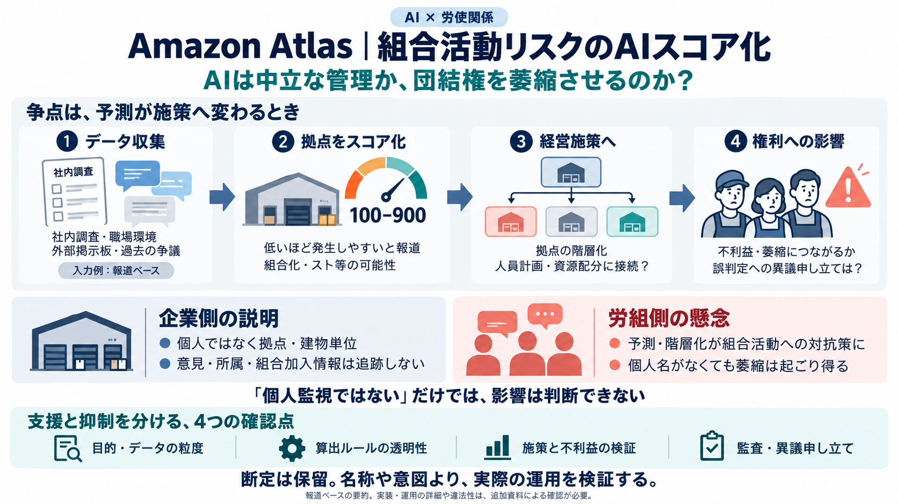

Amazon uses AI-powered ‘risk’ system to track union activity globally
Disclosed as part of a labour dispute between Amazon and Canadian union Unifor – in which the British Columbia Labour Bo…

倉庫の「組合活動リスク」を予測し、拠点ごとにスコア化する可能性がある——その境界（支援か抑制か）が争点になっています。
AIは中立な管理か、それとも団結権の萎縮につながる運用か。
予測が経営判断に直結すると、個人監視でなくても介入の圧力が生まれ得ます。
業務最適化（生産性）は正当化されやすい一方、労働組合やスト等の行動を“リスク”として扱うと、権利との緊張が生まれます。
拠点を階層化し、先回りの施策（予防的介入）に意思決定が傾き得ます。
誤判定・不利益の分配・異議申し立ての困難さが、団結を萎縮させ得ます。
報道では、Atlasが組合化の可能性や、スト／座り込み等の“混乱を伴う労働イベント”の可能性を推定し、拠点ごとに100〜900のリスクスコアを付与するとされています。
リスクスコア（100〜900） スコアが低いほど「起こりやすい」と紹介
英国・米国・カナダの倉庫（報道ベース）
経営側の“望ましい水準”（低リスク）へ誘導する意思決定に関係し得る。
Atlasは「数百のデータ点」を集めるとされ、社内フィードバック調査の反応や、Redditなどの外部掲示板の投稿、職場環境や過去の争議が含まれる可能性が示されています。
社内調査の反応、職場環境、過去の争議
Redditなど外部掲示板の投稿（報道ベース）
個人名がなくても、投稿内容や反応パターンから推定が“寄与”し得るため、企業側の説明を慎重に見極める必要があります。
争点は「何を使ったか」だけでなく、「目的」と「運用結果」が支援か抑制かに傾いていないかです。
行動や発言のリスクを検知し、労働者の行動を萎縮させ得る。
課題の把握と改善が中心で、権利行使しても不利益が出ない設計が求められる。
予防的に“不利益配分”へ翻訳されていないか（介入の仕方）。
Amazonは「個人の監視ではなくサイト／建物レベル」「個人の意見・所属・組合加入情報は追跡しない」と反論。一方、労組側は組合活動の対抗策につながる設計だと主張しています。
監視ではない／個人データや加入情報を追跡しない／サイト／建物レベル
“対抗策（outwit）”が可能な予測・階層化／権力格差が増幅
どのデータを、どの粒度で、どのルールでスコア化し、どんな施策へ変換したか。
最大の論点は、AIが“予測”で終わらず、“現場の行動”に翻訳されたときに生じる影響です。
社内調査・掲示板・職場環境・過去の争議など（可能性として報道）
組合化や“混乱イベント”の確率をスコアへ（ロジックは未確定）
拠点の階層化が、人員計画・資源配分・標準行動に接続され得る
不利益・萎縮・異議申し立ての困難化につながるかが争点
個人を追わないという説明でも、透明性・公正性・説明可能性が欠けると、信頼と救済可能性が損なわれます。
団結権（組合活動）とデータ保護（例：GDPR）との整合。
権利行使を萎縮させる予測・分類なら深刻度が増す。
ブラックボックス性が高いほど誤判定や恣意性の懸念が残る。
データ粒度、算出ルール、監査可能性、誤り時の是正手段、労働者への説明。
報道では過去にGDPR関連の詳細な作業追跡が問題視され制裁を受けた例があり、新たなAI運用にも厳格な監視が向く可能性が高いと示唆されています。
同種リスクが再生産されていないか、データ最小化・目的限定・監査可能性が問われやすい。
英国での実運用の有無（類似システム含む）と、誤判定時の救済設計。
組合の加入や活動は“特別なカテゴリーのデータ”に当たり得るため、扱いにより厳しい制約がかかり得る（報道・補足整理）。
英国で直接的な運用がないなら影響は限定される可能性があります。ただし別名称や類似システム、間接的な知見の持ち込みがあればリスクは残ります。
英国での直接影響は小さくなる可能性。
別システムの有無で、間接的リスクが継続。
名称よりも“実際のデータ処理と運用”を確認すること。
報道からは懸念は妥当である可能性が高い一方、違法性や“意図”の確定は追加情報と判断を待つ必要があります。重要なのは因果（予測→施策→不利益）を追えるかです。
透明性（何を使い、何の目的で）、説明責任（誤り時の救済）、監査可能性。
個人監視の有無だけでなく、団結権の抑制につながる運用がないか。
この事例は「業務改善」の名の下に、技術が労使関係へ介入し得る境界を可視化している。
以下は、この要約で触れた論点を検証するための“参照先の型”です。記事本文と裁判資料、当局の判断を優先してください。
開示資料（データ処理の粒度、スコア算出、運用施策の接続）。
GDPR等の解釈・制裁判断（過去例の射程と今回の同型性）。
Computer Weekly等の補足整理、関連報道（英国での運用有無の追跡）。
個人／チーム／拠点のどこまで扱うか。
目的限定・データ最小化・監査・是正手続。
スコアが施策（人員計画など）にどう変換されるか。
団結権の萎縮につながる設計になっていないか。
Disclosed as part of a labour dispute between Amazon and Canadian union Unifor – in which the British Columbia Labour Bo…
The documents revealing Amazon’s Atlas AI tool were disclosed as part of a legal challenge by Canadian union Unifor and …
Documents disclosed in a Canadian labour board proceeding, reported by Amazon uses AI surveillance to monitor union acti…
The call follows a report on Atlas's use in Canada, which described the tool as drawing on staff communications and exte…
The report highlights use of Atlas, an AI powered tool that combines hundreds of data points to assess union organising…